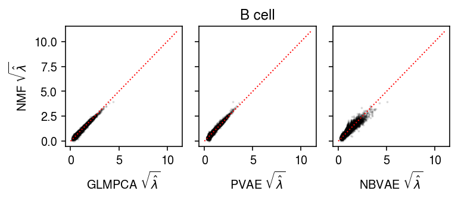
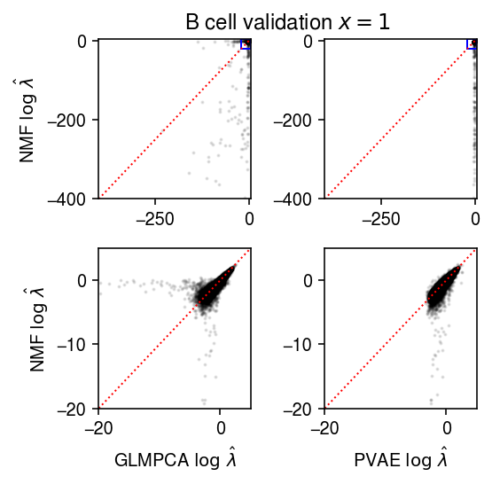
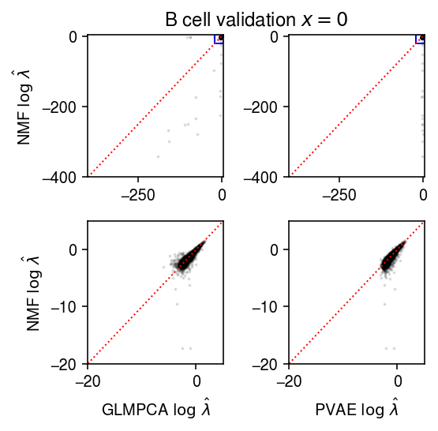
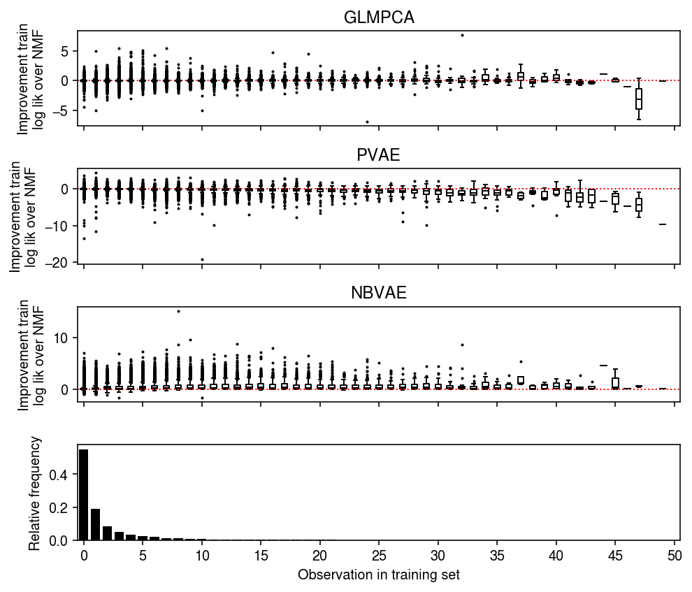
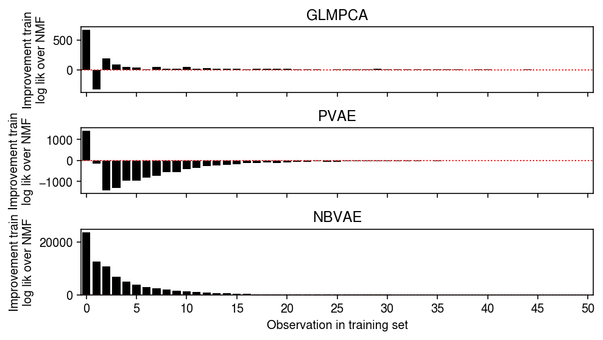
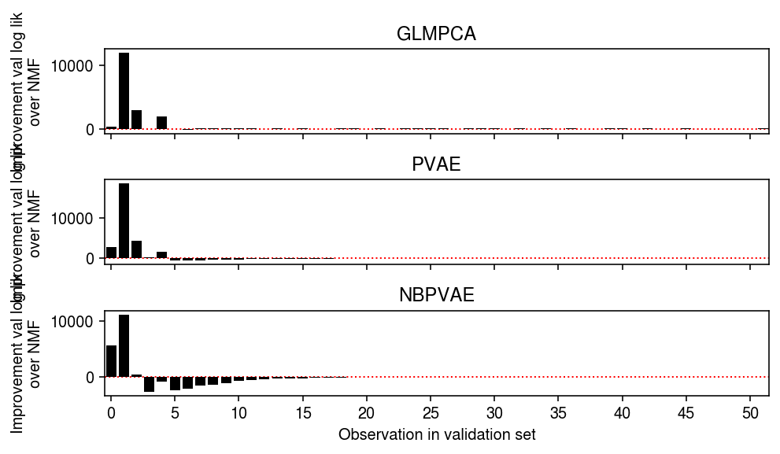
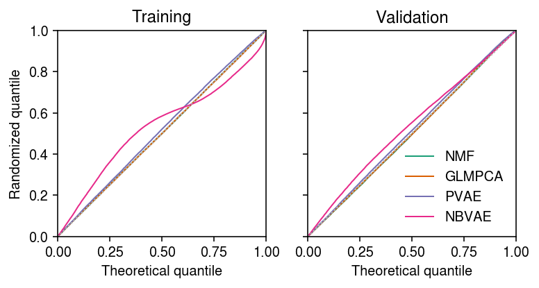

Comparison of fitted values
Table of Contents
Introduction
We previously found that NMF, GLM-PCA, and PVAE all had similar average performance on a binomial thinning benchmark. Here, we investigate the per-observation performance of these methods.
Setup
import anndata import numpy as np import pandas as pd import scanpy as sc import scipy.stats as st import scmodes import torch
%matplotlib inline %config InlineBackend.figure_formats = set(['retina'])
import matplotlib.pyplot as plt plt.rcParams['figure.facecolor'] = 'w' plt.rcParams['font.family'] = 'Nimbus Sans'
Results
Datasets
Follow the data processing for the Poisson thinning analysis.
B cells
Split the data into training and validation sets using binomial thinning, then fit NMF, GLMPCA, and PVAE.
# Important: this implicitly sets the random seed x = data['b_cells']() train, test = scmodes.benchmark.train_test_split(x) np.save('/scratch/midway2/aksarkar/modes/fitted-values/b_cells-train', train) np.save('/scratch/midway2/aksarkar/modes/fitted-values/b_cells-test', test)
sbatch --partition=broadwl -n1 --mem=8G --time=24:00:00 #!/bin/bash source activate scmodes python <<EOF <<imports>> train = np.load('/scratch/midway2/aksarkar/modes/fitted-values/b_cells-train.npy') l, f, _ = scmodes.lra.nmf(train, rank=8, tol=1e-2, max_iters=100000, verbose=True) lam0 = l @ f.T np.save('/scratch/midway2/aksarkar/modes/fitted-values/b_cells-nmf-lam', lam0) l, f, _ = scmodes.lra.glmpca(train, rank=8, tol=1e-2, max_iters=100000, verbose=True) lam1 = np.exp(l @ f.T) np.save('/scratch/midway2/aksarkar/modes/fitted-values/b_cells-glmpca-lam', lam1) EOF
sbatch --partition=gpu2 --gres=gpu:1 --mem=8G #!/bin/bash source activate scmodes python <<EOF <<imports>> train = np.load('/scratch/midway2/aksarkar/modes/fitted-values/b_cells-train.npy') torch.manual_seed(1) xt = torch.tensor(train, dtype=torch.float) m = scmodes.lra.PVAE(input_dim=train.shape[1], latent_dim=8).fit(xt, test_size=0.1, lr=1e-3, max_epochs=200, trace=True) lam2 = m.denoise(xt, n_samples=100) np.save('/scratch/midway2/aksarkar/modes/fitted-values/b_cells-pvae-lam', lam2) np.save('/scratch/midway2/aksarkar/modes/fitted-values/b_cells-pvae-trace', np.array(m.trace)) m = scmodes.lra.NBVAE(input_dim=train.shape[1], latent_dim=8, disp_by_gene=True).fit(xt, test_size=0.1, lr=1e-3, max_epochs=400, trace=True) lam3 = m.denoise(xt, n_samples=100) np.save('/scratch/midway2/aksarkar/modes/fitted-values/b_cells-nbvae-log_inv_disp', m.log_inv_disp.detach().cpu().numpy()) np.save('/scratch/midway2/aksarkar/modes/fitted-values/b_cells-nbvae-lam', lam3) np.save('/scratch/midway2/aksarkar/modes/fitted-values/b_cells-nbvae-trace', np.array(m.trace)) EOF
Examine the VAE optimization traces.
cm = plt.get_cmap('Paired') plt.clf() plt.gcf().set_size_inches(4, 2) trace = np.load('/scratch/midway2/aksarkar/modes/fitted-values/b_cells-pvae-trace.npy') trace2 = np.load('/scratch/midway2/aksarkar/modes/fitted-values/b_cells-nbvae-trace.npy') for i, (t, s, k) in enumerate(zip(trace.T, [900, 100], ['PVAE train', 'PVAE val'])): plt.plot(np.log(t / s), lw=1, c=cm(i), label=k) for i, (t, s, k) in enumerate(zip(trace2.T, [900, 100], ['NBVAE train', 'NBVAE val'])): plt.plot(np.log(t / s), lw=1, c=cm(i + 2), label=k) plt.legend(frameon=False) plt.xlabel('Epoch') plt.ylabel('Avg log neg ELBO') plt.tight_layout()
Read the results.
train = np.load('/scratch/midway2/aksarkar/modes/fitted-values/b_cells-train.npy') test = np.load('/scratch/midway2/aksarkar/modes/fitted-values/b_cells-test.npy') lam0 = np.load('/scratch/midway2/aksarkar/modes/fitted-values/b_cells-nmf-lam.npy') lam1 = np.load('/scratch/midway2/aksarkar/modes/fitted-values/b_cells-glmpca-lam.npy') lam2 = np.load('/scratch/midway2/aksarkar/modes/fitted-values/b_cells-pvae-lam.npy') lam3 = np.load('/scratch/midway2/aksarkar/modes/fitted-values/b_cells-nbvae-lam.npy') nbvae_log_inv_disp = np.load('/scratch/midway2/aksarkar/modes/fitted-values/b_cells-nbvae-log_inv_disp.npy')
Compare the fitted values of each method against other.
plt.clf() fig, ax = plt.subplots(1, 3, sharey=True) fig.set_size_inches(5.5, 2.5) ax[0].scatter(np.sqrt(lam1.ravel()[::50]), np.sqrt(lam0.ravel()[::50]), s=1, c='k', alpha=0.1) ax[0].plot([0, 11], [0, 11], lw=1, ls=':', c='r') ax[0].set_xlabel(r'GLMPCA $\sqrt{\hat\lambda}$') ax[0].set_ylabel(r'NMF $\sqrt{\hat\lambda}$') ax[1].scatter(np.sqrt(lam2.ravel()[::50]), np.sqrt(lam0.ravel()[::50]), s=1, c='k', alpha=0.1) ax[1].plot([0, 11], [0, 11], lw=1, ls=':', c='r') ax[1].set_xlabel(r'PVAE $\sqrt{\hat\lambda}$') ax[2].scatter(np.sqrt(lam3.ravel()[::50]), np.sqrt(lam0.ravel()[::50]), s=1, c='k', alpha=0.1) ax[2].plot([0, 11], [0, 11], lw=1, ls=':', c='r') ax[2].set_xlabel(r'NBVAE $\sqrt{\hat\lambda}$') a = fig.add_subplot(111, frame_on=False, xticks=[], yticks=[]) a.set_title('B cell') fig.tight_layout()

Compare the fitted values of each method against each other, only for observations which were 1 in the validation data.
plt.clf() fig, ax = plt.subplots(2, 2) fig.set_size_inches(4, 4) query = np.isclose(test, 1) lim = [-400, 5] ax[0][0].scatter(np.log(lam1[query].ravel()), np.log(lam0[query].ravel()), s=1, c='k', alpha=0.1) ax[0][0].plot(lim, lim, lw=1, ls=':', c='r') ax[0][0].set_xlim(lim) ax[0][0].set_ylim(lim) ax[0][0].set_ylabel(r'NMF $\log\ \hat\lambda$') ax[0][1].scatter(np.log(lam2[query].ravel()), np.log(lam0[query].ravel()), s=1, c='k', alpha=0.1) ax[0][1].plot(lim, lim, lw=1, ls=':', c='r') ax[0][1].set_xlim(lim) ax[0][1].set_ylim(lim) lim = [-20, 5] ax[0][0].add_patch(plt.Rectangle((lim[0], lim[0]), lim[1] - lim[0], lim[1] - lim[0], fill=False, color='b')) ax[0][1].add_patch(plt.Rectangle((lim[0], lim[0]), lim[1] - lim[0], lim[1] - lim[0], fill=False, color='b')) ax[1][0].scatter(np.log(lam1[query].ravel()), np.log(lam0[query].ravel()), s=1, c='k', alpha=0.1) ax[1][0].plot(lim, lim, lw=1, ls=':', c='r') ax[1][0].set_xlim(lim) ax[1][0].set_ylim(lim) ax[1][0].set_xlabel(r'GLMPCA $\log\ \hat\lambda$') ax[1][0].set_ylabel(r'NMF $\log\ \hat\lambda$') ax[1][1].scatter(np.log(lam2[query].ravel()), np.log(lam0[query].ravel()), s=1, c='k', alpha=0.1) ax[1][1].plot(lim, lim, lw=1, ls=':', c='r') ax[1][1].set_xlim(lim) ax[1][1].set_ylim(lim) ax[1][1].set_xlabel(r'PVAE $\log\ \hat\lambda$') a = fig.add_subplot(111, frame_on=False, xticks=[], yticks=[]) a.set_title('B cell validation $x = 1$') fig.tight_layout()

Repeat for observations which were 0 in the validation data.
plt.clf() fig, ax = plt.subplots(2, 2) fig.set_size_inches(4, 4) query = np.isclose(test, 0) lim = [-400, 5] ax[0][0].scatter(np.log(lam1[query].ravel()[::50]), np.log(lam0[query].ravel()[::50]), s=1, c='k', alpha=0.1) ax[0][0].plot(lim, lim, lw=1, ls=':', c='r') ax[0][0].set_xlim(lim) ax[0][0].set_ylim(lim) ax[0][0].set_ylabel(r'NMF $\log\ \hat\lambda$') ax[0][1].scatter(np.log(lam2[query].ravel()[::50]), np.log(lam0[query].ravel()[::50]), s=1, c='k', alpha=0.1) ax[0][1].plot(lim, lim, lw=1, ls=':', c='r') ax[0][1].set_xlim(lim) ax[0][1].set_ylim(lim) lim = [-20, 5] ax[0][0].add_patch(plt.Rectangle((lim[0], lim[0]), lim[1] - lim[0], lim[1] - lim[0], fill=False, color='b')) ax[0][1].add_patch(plt.Rectangle((lim[0], lim[0]), lim[1] - lim[0], lim[1] - lim[0], fill=False, color='b')) ax[1][0].scatter(np.log(lam1[query].ravel()[::50]), np.log(lam0[query].ravel()[::50]), s=1, c='k', alpha=0.1) ax[1][0].plot(lim, lim, lw=1, ls=':', c='r') ax[1][0].set_xlim(lim) ax[1][0].set_ylim(lim) ax[1][0].set_xlabel(r'GLMPCA $\log\ \hat\lambda$') ax[1][0].set_ylabel(r'NMF $\log\ \hat\lambda$') ax[1][1].scatter(np.log(lam2[query].ravel()[::50]), np.log(lam0[query].ravel()[::50]), s=1, c='k', alpha=0.1) ax[1][1].plot(lim, lim, lw=1, ls=':', c='r') ax[1][1].set_xlim(lim) ax[1][1].set_ylim(lim) ax[1][1].set_xlabel(r'PVAE $\log\ \hat\lambda$') a = fig.add_subplot(111, frame_on=False, xticks=[], yticks=[]) a.set_title('B cell validation $x = 0$') fig.tight_layout()

Look at the average training log likelihoods.
llik0 = st.poisson(lam0).logpmf(train) llik1 = st.poisson(lam1).logpmf(train) llik2 = st.poisson(lam2).logpmf(train) llik3 = st.poisson(lam3).logpmf(train) pd.Series({'NMF': llik0.mean(), 'GLMPCA': llik1.mean(), 'PVAE': llik2.mean(), 'NBVAE': llik3.mean()})
NMF -1.038913 GLMPCA -1.036029 PVAE -1.062526 NBVAE -0.830541 dtype: float64
Look at the distribution of per-observation training log likelihood differences, stratified by observed value.
plt.clf() fig, ax = plt.subplots(4, 1, sharex=True) fig.set_size_inches(7, 6) grid = np.arange(train.max() + 1) for i in grid: ax[0].boxplot((llik1 - llik0)[train == i].ravel(), positions=[i], widths=[0.5], medianprops={'color': 'k'}, flierprops={'marker': '.', 'markersize': 2}) ax[0].axhline(y=0, ls=':', lw=1, c='r') ax[0].set_ylabel('Improvement train\nlog lik over NMF') ax[0].set_title('GLMPCA') for i in grid: ax[1].boxplot((llik2 - llik0)[train == i].ravel(), positions=[i], widths=[0.5], medianprops={'color': 'k'}, flierprops={'marker': '.', 'markersize': 2}) ax[1].axhline(y=0, ls=':', lw=1, c='r') ax[1].set_ylabel('Improvement train\nlog lik over NMF') ax[1].set_title('PVAE') for i in grid: ax[2].boxplot((llik3 - llik0)[train == i].ravel(), positions=[i], widths=[0.5], medianprops={'color': 'k'}, flierprops={'marker': '.', 'markersize': 2}) ax[2].axhline(y=0, ls=':', lw=1, c='r') ax[2].set_ylabel('Improvement train\nlog lik over NMF') ax[2].set_title('NBVAE') h, e = np.histogram(train.ravel(), bins=grid, density=True) ax[3].bar(e[:-1], h, color='k') ax[3].set_ylabel('Relative frequency') ax[3].set_xticks(grid[::5]) ax[3].set_xticklabels(grid[::5].astype(int)) ax[3].set_xlim(-.5, grid.max() - .5) ax[3].set_xlabel('Observation in training set') fig.tight_layout()

Look at the total training log likelihood differences, stratified by observed value.
plt.clf() fig, ax = plt.subplots(3, 1, sharex=True) fig.set_size_inches(7, 4) grid = np.arange(train.max() + 1) ax[0].bar(grid, np.array([(llik1 - llik0)[train == i].sum() for i in grid]), color='k') ax[0].axhline(y=0, ls=':', lw=1, c='r') ax[0].set_ylabel('Improvement train\nlog lik over NMF') ax[0].set_title('GLMPCA') ax[1].bar(grid, np.array([(llik2 - llik0)[train == i].sum() for i in grid]), color='k') ax[1].axhline(y=0, ls=':', lw=1, c='r') ax[1].set_ylabel('Improvement train\nlog lik over NMF') ax[1].set_title('PVAE') ax[2].bar(grid, np.array([(llik3 - llik0)[train == i].sum() for i in grid]), color='k') ax[2].axhline(y=0, ls=':', lw=1, c='r') ax[2].set_ylabel('Improvement train\nlog lik over NMF') ax[2].set_title('NBVAE') ax[2].set_xticks(grid[::5]) ax[2].set_xticklabels(grid[::5].astype(int)) ax[2].set_xlim(-.5, grid.max() - .5) ax[2].set_xlabel('Observation in training set') fig.tight_layout()

Repeat the analysis for the validation data.
s = (test.sum(axis=1) / train.sum(axis=1)).reshape(-1, 1) llik0 = st.poisson(s * lam0).logpmf(test) llik1 = st.poisson(s * lam1).logpmf(test) llik2 = st.poisson(s * lam2).logpmf(test) llik3 = st.poisson(s * lam3).logpmf(test) pd.Series({'NMF': llik0.mean(), 'GLMPCA': llik1.mean(), 'PVAE': llik2.mean(), 'NBVAE': llik3.mean()})
NMF -1.132348 GLMPCA -1.087027 PVAE -1.071313 NBVAE -1.129745 dtype: float64
plt.clf() fig, ax = plt.subplots(4, 1, sharex=True) fig.set_size_inches(7, 6) grid = np.arange(test.max()) for i in grid: ax[0].boxplot((llik1 - llik0)[test == i].ravel(), positions=[i], widths=[0.5], medianprops={'color': 'k'}, flierprops={'marker': '.', 'markersize': 2}) ax[0].axhline(y=0, ls=':', lw=1, c='r') ax[0].set_ylabel('Improvement val log lik\nover NMF') ax[0].set_title('GLMPCA') for i in grid: ax[1].boxplot((llik2 - llik0)[test == i].ravel(), positions=[i], widths=[0.5], medianprops={'color': 'k'}, flierprops={'marker': '.', 'markersize': 2}) ax[1].axhline(y=0, ls=':', lw=1, c='r') ax[1].set_ylabel('Improvement val log lik\nover NMF') ax[1].set_title('PVAE') for i in grid: ax[2].boxplot((llik3 - llik0)[test == i].ravel(), positions=[i], widths=[0.5], medianprops={'color': 'k'}, flierprops={'marker': '.', 'markersize': 2}) ax[2].axhline(y=0, ls=':', lw=1, c='r') ax[2].set_ylabel('Improvement val log lik\nover NMF') ax[2].set_title('NBVAE') h, e = np.histogram(test.ravel(), bins=np.arange(test.max() + 1), density=True) ax[3].bar(e[:-1], h, color='k') ax[3].set_ylabel('Relative frequency') ax[3].set_xticks(grid[::5]) ax[3].set_xticklabels(grid[::5].astype(int)) ax[3].set_xlim(-.5, grid.max() - .5) ax[3].set_xlabel('Observation in validation set') fig.tight_layout()

plt.clf() fig, ax = plt.subplots(3, 1, sharex=True) fig.set_size_inches(7, 4) grid = np.arange(test.max() + 1) ax[0].bar(grid, np.array([(llik1 - llik0)[test == i].sum() for i in grid]), color='k') ax[0].axhline(y=0, ls=':', lw=1, c='r', zorder=-3) ax[0].set_ylabel('Improvement val log lik\nover NMF') ax[0].set_title('GLMPCA') ax[1].bar(grid, np.array([(llik2 - llik0)[test == i].sum() for i in grid]), color='k') ax[1].axhline(y=0, ls=':', lw=1, c='r', zorder=-3) ax[1].set_ylabel('Improvement val log lik\nover NMF') ax[1].set_title('PVAE') ax[2].bar(grid, np.array([(llik3 - llik0)[test == i].sum() for i in grid]), color='k') ax[2].axhline(y=0, ls=':', lw=1, c='r', zorder=-3) ax[2].set_ylabel('Improvement val log lik\nover NMF') ax[2].set_title('NBPVAE') ax[2].set_xticks(grid[::5]) ax[2].set_xticklabels(grid[::5].astype(int)) ax[2].set_xlim(-.5, grid.max() - .5) ax[2].set_xlabel('Observation in validation set') fig.tight_layout()

Count the fraction of observations equal to one in the validation set.
(test == 1).sum() / np.prod(test.shape)
0.187488
For observations which were equal to one in validation set, look at the distribution of training set values.
pd.Series(dict(enumerate([np.logical_and(train == i, test == 1).sum() / (test == 1).sum() for i in range(4)])))
0 0.540323 1 0.254025 2 0.107712 3 0.050151 dtype: float64
Look at the distribution of (a random sample of) randomized quantiles for each method.
train_qs = [] test_qs = [] for l in [lam0, lam1, lam2]: F = st.poisson(l) q = np.sort((F.cdf(train - 1) + np.random.uniform(size=train.shape) * F.pmf(train)).ravel()[::10]) train_qs.append(q) q = np.sort((F.cdf(test - 1) + np.random.uniform(size=test.shape) * F.pmf(test)).ravel()[::10]) test_qs.append(q) for l in [lam3]: F = st.nbinom(n=np.exp(nbvae_log_inv_disp), p=1 / (1 + l * np.exp(-nbvae_log_inv_disp))) q = np.sort((F.cdf(train - 1) + np.random.uniform(size=train.shape) * F.pmf(train)).ravel()[::10]) train_qs.append(q) q = np.sort((F.cdf(test - 1) + np.random.uniform(size=test.shape) * F.pmf(test)).ravel()[::10]) test_qs.append(q)
cm = plt.get_cmap('Dark2') plt.clf() fig, ax = plt.subplots(1, 2, sharey=True) fig.set_size_inches(5.5, 3) lim = [0, 1] for a, qs, t in zip(ax.ravel(), [train_qs, test_qs], ['Training', 'Validation']): for i, (q, k) in enumerate(zip(qs, ['NMF', 'GLMPCA', 'PVAE', 'NBVAE'])): x = np.linspace(0, 1, q.shape[0] + 1)[1:] a.plot(x, np.sort(q), lw=1, c=cm(i), label=k) a.plot(lim, lim, lw=1, ls=':', c='0.7') a.set_xlim(lim) a.set_ylim(lim) a.set_xlabel('Theoretical quantile') a.set_title(t) ax[0].set_ylabel('Randomized quantile') ax[1].legend(frameon=False) fig.tight_layout()

T cell/B cell
Split the data into training and validation sets using binomial thinning, then fit NMF, GLMPCA, and PVAE.
# Important: this implicitly sets the random seed x = data['cytotoxic_t-b_cells']() train, test = scmodes.benchmark.train_test_split(x) np.save('/scratch/midway2/aksarkar/modes/fitted-values/cytotoxic_t-b_cells-train', train) np.save('/scratch/midway2/aksarkar/modes/fitted-values/cytotoxic_t-b_cells-test', test)
sbatch --partition=broadwl -n1 --mem=8G --time=24:00:00 #!/bin/bash source activate scmodes python <<EOF <<imports>> train = np.load('/scratch/midway2/aksarkar/modes/fitted-values/cytotoxic_t-b_cells-train.npy') l, f, _ = scmodes.lra.nmf(train, rank=8, tol=1e-2, max_iters=100000, verbose=True) lam0 = l @ f.T np.save('/scratch/midway2/aksarkar/modes/fitted-values/cytotoxic_t-b_cells-nmf-lam', lam0) l, f, _ = scmodes.lra.glmpca(train, rank=8, tol=1e-2, max_iters=100000, verbose=True) lam1 = np.exp(l @ f.T) np.save('/scratch/midway2/aksarkar/modes/fitted-values/cytotoxic_t-b_cells-glmpca-lam', lam1) EOF
sbatch --partition=gpu2 --gres=gpu:1 --mem=8G #!/bin/bash source activate scmodes python <<EOF <<imports>> train = np.load('/scratch/midway2/aksarkar/modes/fitted-values/cytotoxic_t-b_cells-train.npy') xt = torch.tensor(train, dtype=torch.float) m = scmodes.lra.PVAE(input_dim=train.shape[1], latent_dim=8).fit(xt, test_size=0.1, lr=1e-3, max_epochs=200, trace=True) lam2 = m.denoise(xt, n_samples=100) np.save('/scratch/midway2/aksarkar/modes/fitted-values/cytotoxic_t-b_cells-pvae-lam', lam2) np.save('/scratch/midway2/aksarkar/modes/fitted-values/cytotoxic_t-b_cells-pvae-trace', np.array(m.trace)) EOF
Read the results.
train = np.load('/scratch/midway2/aksarkar/modes/fitted-values/cytotoxic_t-b_cells-train.npy') test = np.load('/scratch/midway2/aksarkar/modes/fitted-values/cytotoxic_t-b_cells-test.npy') lam0 = np.load('/scratch/midway2/aksarkar/modes/fitted-values/cytotoxic_t-b_cells-nmf-lam.npy') lam1 = np.load('/scratch/midway2/aksarkar/modes/fitted-values/cytotoxic_t-b_cells-glmpca-lam.npy') lam2 = np.load('/scratch/midway2/aksarkar/modes/fitted-values/cytotoxic_t-b_cells-pvae-lam.npy')
Plot the results.
plt.clf() fig, ax = plt.subplots(1, 2, sharey=True) fig.set_size_inches(4, 2.5) ax[0].scatter(np.sqrt(lam1.ravel()[::50]), np.sqrt(lam0.ravel()[::50]), s=1, c='k', alpha=0.1) ax[0].plot([0, 10], [0, 10], lw=1, ls=':', c='r') ax[0].set_xlabel(r'GLMPCA $\sqrt{\hat\lambda}$') ax[0].set_ylabel(r'NMF $\sqrt{\hat\lambda}$') ax[1].scatter(np.sqrt(lam2.ravel()[::50]), np.sqrt(lam0.ravel()[::50]), s=1, c='k', alpha=0.1) ax[1].plot([0, 10], [0, 10], lw=1, ls=':', c='r') ax[1].set_xlabel(r'PVAE $\sqrt{\hat\lambda}$') a = fig.add_subplot(111, frame_on=False, xticks=[], yticks=[]) a.set_title('T cell/B cell') fig.tight_layout()

PBMC
Split the data into training and validation sets using binomial thinning, then fit NMF, GLMPCA, and PVAE.
# Important: this implicitly sets the random seed x = data['pbmc_10k_v3']() train, test = scmodes.benchmark.train_test_split(x) np.save('/scratch/midway2/aksarkar/modes/fitted-values/pbmcs_10k_v3-train', train) np.save('/scratch/midway2/aksarkar/modes/fitted-values/pbmcs_10k_v3-test', test)
sbatch --partition=broadwl -n1 --mem=8G --time=24:00:00 #!/bin/bash source activate scmodes python <<EOF <<imports>> train = np.load('/scratch/midway2/aksarkar/modes/fitted-values/pbmcs_10k_v3-train.npy') l, f, _ = scmodes.lra.nmf(train, rank=8, tol=1e-2, max_iters=100000, verbose=True) lam0 = l @ f.T np.save('/scratch/midway2/aksarkar/modes/fitted-values/pbmcs_10k_v3-nmf-lam', lam0) l, f, _ = scmodes.lra.glmpca(train, rank=8, tol=1e-2, max_iters=100000, verbose=True) lam1 = np.exp(l @ f.T) np.save('/scratch/midway2/aksarkar/modes/fitted-values/pbmcs_10k_v3-glmpca-lam', lam1) EOF
sbatch --partition=gpu2 --gres=gpu:1 --mem=8G #!/bin/bash source activate scmodes python <<EOF <<imports>> train = np.load('/scratch/midway2/aksarkar/modes/fitted-values/pbmcs_10k_v3-train.npy') xt = torch.tensor(train, dtype=torch.float) m = scmodes.lra.PVAE(input_dim=train.shape[1], latent_dim=8).fit(xt, test_size=0.1, lr=1e-3, max_epochs=200, trace=True) lam2 = m.denoise(xt, n_samples=100) np.save('/scratch/midway2/aksarkar/modes/fitted-values/pbmcs_10k_v3-pvae-lam', lam2) np.save('/scratch/midway2/aksarkar/modes/fitted-values/pbmcs_10k_v3-pvae-trace', np.array(m.trace)) EOF
Read the results.
train = np.load('/scratch/midway2/aksarkar/modes/fitted-values/pbmcs_10k_v3-train.npy') test = np.load('/scratch/midway2/aksarkar/modes/fitted-values/pbmcs_10k_v3-test.npy') lam0 = np.load('/scratch/midway2/aksarkar/modes/fitted-values/pbmcs_10k_v3-nmf-lam.npy') lam1 = np.load('/scratch/midway2/aksarkar/modes/fitted-values/pbmcs_10k_v3-glmpca-lam.npy') lam2 = np.load('/scratch/midway2/aksarkar/modes/fitted-values/pbmcs_10k_v3-pvae-lam.npy')
Plot the results.
lim = [0, 3] plt.clf() fig, ax = plt.subplots(1, 2, sharey=True) fig.set_size_inches(4, 2.5) ax[0].scatter(np.sqrt(lam1.ravel()[::50]), np.sqrt(lam0.ravel()[::50]), s=1, c='k', alpha=0.1) ax[0].plot(lim, lim, lw=1, ls=':', c='r') ax[0].set_xlabel(r'GLMPCA $\sqrt{\hat\lambda}$') ax[0].set_ylabel(r'NMF $\sqrt{\hat\lambda}$') ax[1].scatter(np.sqrt(lam2.ravel()[::50]), np.sqrt(lam0.ravel()[::50]), s=1, c='k', alpha=0.1) ax[1].plot(lim, lim, lw=1, ls=':', c='r') ax[1].set_xlabel(r'PVAE $\sqrt{\hat\lambda}$') a = fig.add_subplot(111, frame_on=False, xticks=[], yticks=[]) a.set_title('PBMC') fig.tight_layout()
Liver
Split the data into training and validation sets using binomial thinning, then fit NMF, GLMPCA, and PVAE.
# Important: this implicitly sets the random seed x = data['liver-caudate-lobe']() train, test = scmodes.benchmark.train_test_split(x) np.save('/scratch/midway2/aksarkar/modes/fitted-values/liver-caudate-lobe-train', train) np.save('/scratch/midway2/aksarkar/modes/fitted-values/liver-caudate-lobe-test', test)
sbatch --partition=broadwl -n1 --mem=8G --time=2:00:00 #!/bin/bash source activate scmodes python <<EOF <<imports>> train = np.load('/scratch/midway2/aksarkar/modes/fitted-values/liver-caudate-lobe-train.npy') l, f, _ = scmodes.lra.nmf(train, rank=8, tol=1e-2, max_iters=100000, verbose=True) lam0 = l @ f.T np.save('/scratch/midway2/aksarkar/modes/fitted-values/liver-caudate-lobe-nmf-lam', lam0) l, f, _ = scmodes.lra.glmpca(train, rank=8, tol=1e-2, max_iters=100000, verbose=True) lam1 = np.exp(l @ f.T) np.save('/scratch/midway2/aksarkar/modes/fitted-values/liver-caudate-lobe-glmpca-lam', lam1) EOF
sbatch --partition=gpu2 --gres=gpu:1 --mem=8G #!/bin/bash source activate scmodes python <<EOF <<imports>> train = np.load('/scratch/midway2/aksarkar/modes/fitted-values/liver-caudate-lobe-train.npy') torch.manual_seed(1) xt = torch.tensor(train, dtype=torch.float) m = scmodes.lra.PVAE(input_dim=train.shape[1], latent_dim=8).fit(xt, test_size=0.1, lr=1e-3, max_epochs=1600, trace=True) lam2 = m.denoise(xt, n_samples=100) np.save('/scratch/midway2/aksarkar/modes/fitted-values/liver-caudate-lobe-pvae-lam', lam2) np.save('/scratch/midway2/aksarkar/modes/fitted-values/liver-caudate-lobe-pvae-trace', np.array(m.trace)) EOF
Examine the VAE optimization traces.
cm = plt.get_cmap('Paired') plt.clf() plt.gcf().set_size_inches(4, 2) trace = np.load('/scratch/midway2/aksarkar/modes/fitted-values/liver-caudate-lobe-pvae-trace.npy') for i, (t, s, k) in enumerate(zip(trace.T, [900, 100], ['PVAE train', 'PVAE val'])): plt.plot(np.log(t / s), lw=1, c=cm(i), label=k) plt.legend(frameon=False) plt.xlabel('Epoch') plt.ylabel('Avg log neg ELBO') plt.tight_layout()
Read the results.
train = np.load('/scratch/midway2/aksarkar/modes/fitted-values/liver-caudate-lobe-train.npy') test = np.load('/scratch/midway2/aksarkar/modes/fitted-values/liver-caudate-lobe-test.npy') lam0 = np.load('/scratch/midway2/aksarkar/modes/fitted-values/liver-caudate-lobe-nmf-lam.npy') lam1 = np.load('/scratch/midway2/aksarkar/modes/fitted-values/liver-caudate-lobe-glmpca-lam.npy') lam2 = np.load('/scratch/midway2/aksarkar/modes/fitted-values/liver-caudate-lobe-pvae-lam.npy')
s = (test.sum(axis=1) / train.sum(axis=1)).reshape(-1, 1) llik0 = st.poisson(s * lam0).logpmf(test) llik1 = st.poisson(s * lam1).logpmf(test) llik2 = st.poisson(s * lam2).logpmf(test) pd.Series({'NMF': llik0.mean(), 'GLMPCA': llik1.mean(), 'PVAE': llik2.mean()})
NMF -0.961543 GLMPCA -0.940434 PVAE -0.979979 dtype: float64
Plot the results.
plt.clf() fig, ax = plt.subplots(3, 1, sharex=True) fig.set_size_inches(7, 4) grid = np.arange(50) ax[0].bar(grid, np.array([(llik1 - llik0)[test == i].sum() for i in grid]), color='k') ax[0].axhline(y=0, ls=':', lw=1, c='r', zorder=-3) ax[0].set_ylabel('Improvement val log lik\nover NMF') ax[0].set_title('GLMPCA') ax[1].bar(grid, np.array([(llik2 - llik0)[test == i].sum() for i in grid]), color='k') ax[1].axhline(y=0, ls=':', lw=1, c='r', zorder=-3) ax[1].set_ylabel('Improvement val log lik\nover NMF') ax[1].set_title('PVAE') ax[-1].set_xticks(grid[::5]) ax[-1].set_xticklabels(grid[::5].astype(int)) ax[-1].set_xlim(-.5, grid.max() - .5) ax[-1].set_xlabel('Observation in validation set') fig.tight_layout()
lim = [0, 30] plt.clf() fig, ax = plt.subplots(1, 2, sharey=True) fig.set_size_inches(4, 2.5) ax[0].scatter(np.sqrt(lam1.ravel()[::50]), np.sqrt(lam0.ravel()[::50]), s=1, c='k', alpha=0.1) ax[0].plot(lim, lim, lw=1, ls=':', c='r') ax[0].set_xlabel(r'GLMPCA $\sqrt{\hat\lambda}$') ax[0].set_ylabel(r'NMF $\sqrt{\hat\lambda}$') ax[1].scatter(np.sqrt(lam2.ravel()[::50]), np.sqrt(lam0.ravel()[::50]), s=1, c='k', alpha=0.1) ax[1].plot(lim, lim, lw=1, ls=':', c='r') ax[1].set_xlabel(r'PVAE $\sqrt{\hat\lambda}$') a = fig.add_subplot(111, frame_on=False, xticks=[], yticks=[]) a.set_title('Liver') fig.tight_layout()